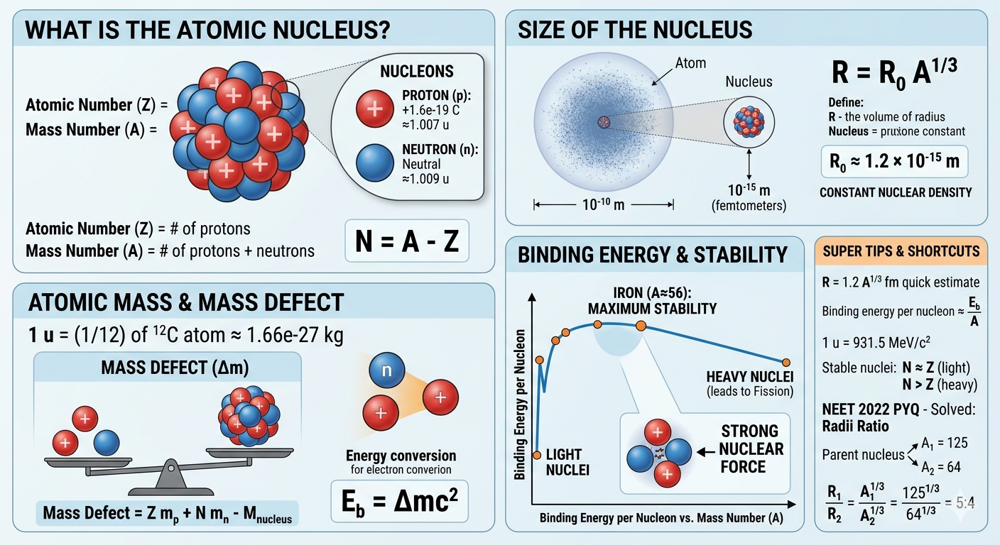

Composition and Size of Nucleus, Atomic Masses

Image generated by Google AI
Imagine holding a tiny grain of dust in sunlight, you can see it floating, drifting gently in the air. Now here is something fascinating: if that grain were an atom scaled up to the size of a cricket stadium, the entire nucleus would still be just a small marble at the center. Everything else? Mostly empty space. And yet, that tiny marble holds almost all the mass and energy of the atom.
This is what makes nuclear physics so mind-blowing—extremely small sizes, but unbelievably powerful effects. Let us explore this hidden world together, step by step, like a conversation where each idea builds on the previous one.
What Is the Atomic Nucleus?
The atomic nucleus is the dense central core of an atom, containing protons and neutrons, collectively known as nucleons. It carries almost the entire mass of the atom but occupies a very small volume compared to the atom’s total size.
Even though electrons define chemistry, it is the nucleus that defines the identity of an element. Change the number of protons, and you literally change the element itself.
- Proton (p): Positively charged particle with a charge of \( +1.6 \times 10^{-19} \, \text{C} \) and mass \( \approx 1.007 \, \text{u} \).
- Neutron (n): Neutral particle with no charge and mass \( \approx 1.009 \, \text{u} \).
- Nucleons: Protons and neutrons inside the nucleus.
Now here is an important question: if protons are all positively charged, why does not the nucleus explode due to repulsion?
The answer lies in the strong nuclear force. This force is:
- Extremely strong (stronger than electrostatic force at short distances)
- Very short-ranged (acts only within ~1–2 fm)
This creates a delicate balance: attraction (strong force) vs repulsion (electrostatic force). Stability comes from this balance.
The number of protons defines the atomic number \( Z \), while the total number of nucleons defines the mass number \( A \). The number of neutrons \( N \) is given by:
\[ N = A - Z \]
Neutrons act like stabilizers, they reduce repulsion without increasing charge, which is why heavy nuclei require more neutrons than protons.
Size of the Nucleus
Nuclear sizes are extremely small, typically in femtometers (1 fm = \( 10^{-15} \, \text{m} \)). The radius of a nucleus is given approximately by:
\[ R = R_0 A^{1/3} \]
Where:
- \( R \): nuclear radius
- \( R_0 \approx 1.2 \times 10^{-15} \, \text{m} \)
- \( A \): mass number of the nucleus
This shows the volume of a nucleus is roughly proportional to the number of nucleons, suggesting nearly constant nuclear density.
Deeper insight: since volume \( \propto R^3 \propto A \), each nucleon occupies nearly equal volume. This leads to the liquid drop model of the nucleus, where nucleons behave somewhat like molecules in a drop of liquid.
This also implies nuclear matter is nearly incompressible, compressing it requires enormous energy.
Atomic Mass and Mass Defect
The atomic mass of an element is the weighted average of its isotopes, expressed in atomic mass units (u or amu), where:
\[ 1 \, \text{u} = \frac{1}{12} \text{mass of one atom of } \ce{^{12}C} \approx 1.66 \times 10^{-27} \, \text{kg} \]
One might expect the nucleus mass to be the simple sum of proton and neutron masses, but it is always slightly less.
Mass Defect (\( \Delta m \)) is the difference between the mass of separated nucleons and the actual mass of the nucleus:
\[ \Delta m = Z m_p + N m_n - M_{\text{nucleus}} \]
This missing mass is converted into binding energy using Einstein’s equation:
\[ E_b = \Delta m c^2 \]
Deeper physics: when nucleons bind together, they move to a lower energy state. The lost energy is emitted, and due to mass-energy equivalence, the system loses mass.
This is why even a tiny mass defect corresponds to huge energy, this principle powers nuclear reactors and stars.
Binding Energy and Stability
Binding energy is the energy required to disassemble a nucleus into individual protons and neutrons. Higher binding energy per nucleon indicates greater stability.
Think of it as "energy per particle needed to break the nucleus." The higher it is, the more stable the nucleus.
- Light nuclei: Binding energy increases with mass number.
- Around Iron (\( A \approx 56 \)): Maximum binding energy per nucleon.
- Heavy nuclei: Binding energy per nucleon decreases, leading to fission in some cases.
This explains:
- Fusion: Light nuclei combine → energy released
- Fission: Heavy nuclei split → energy released
Both processes move nuclei toward greater stability (toward iron region).
Shortcut Concepts and Units
- Atomic radius \( \sim 10^{-10} \, \text{m} \), nuclear radius \( \sim 10^{-15} \, \text{m} \).
- Nuclear density is nearly constant:
\[ \rho \approx 2.3 \times 10^{17} \, \text{kg/m}^3 \]
- 1 amu energy equivalent:
\[ 1 \, \text{u} = 931.5 \, \text{MeV}/c^2 \]
Fun insight: a teaspoon of nuclear matter would weigh billions of tons—similar to neutron star density.
Concept Questions with Explanations
- Which force holds the nucleus together?
Answer: The strong nuclear force, acting between nucleons.
Insight: Dominates only at very short distances. - Why is there a mass defect?
Answer: Some mass converts to binding energy.
Insight: Direct result of \(E = mc^2\). - Which nucleus is most stable?
Answer: Iron-56.
Insight: Balance of forces is optimal. - What determines nuclear size?
Answer: Mass number \( A \) via \( R = R_0 A^{1/3} \).
Insight: Shows constant density behavior.
Super Tips for Solving Fast
- Use \( R = 1.2 A^{1/3} \, \text{fm} \).
- Binding energy per nucleon \( \approx \frac{E_b}{A} \).
- Use \( E = \Delta m c^2 \) for mass defect.
- For stability: light nuclei → \( N \approx Z \), heavy → \( N > Z \).
Always think in patterns, not just formulas.
Previous Year Questions (PYQs)
(NEET 2022): A nucleus of mass number 189 splits into two nuclei having mass numbers 125 and 64. The ratio of the radii of the daughter nuclei is:
- 25:16
- 1:1
- 4:5
- 5:4
Solution:
Nuclear radius is given by:
\[ R = R_0 A^{1/3} \]
Ratio of radii:
\[ \frac{R_1}{R_2} = \left( \frac{125}{64} \right)^{1/3} = \frac{5}{4} \]
Answer: 5:4
Exam tip: Always apply the \( A^{1/3} \) rule directly.